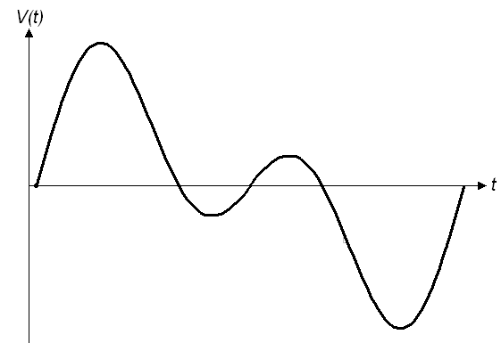

Robotic Arts Intro Fall 2017 (IA277.01)
- Instructor: Lucas Haroldsen (lharoldsen@mica.edu)
- Class Site: yasunaga.work/raif17
- syllabus: syllabus.pdf
- Resources: links.html
09/19: more listening --- [Serial Communication and Analog input]

Handmade Switchs!
- Let's take a look at everyones work on two switches
- Pay attention to the materials and construction
- Document the switches!
Review
- Digital signals
- Input and Output
- digitalRead and digital Write
- variables
- if statement
Today, we will go over together:
- arduino reference page here!
- Analog input
- Serial Communication --> Serial Monitor and Serial Plotter
- using potentiometer, photocells, conductive foam and piezo
- setting a threshhold for your sensor
- conbining conditional logic to use ranges(||, &&)
- analog switches
- Fritzing
Tonight's Code
Reading: Medium by Malcom McCullough
- questions
Presentaton

Printer Shake by Joe Winter
Céleste Boursier
Ryota Kuwakubo
HOMEWORK
Handmade Switches
-
Make a simple circuit with arduino using the button sketch.
- 1 ---One that uses different parts of the body and its movements and gestures to be activated (other than a simple press)
- 2a --- uses tools or objects to be activated
- 2b --- needs two or more people to be activated
Design 2 switches:
and one that either:
or
Reading
- Medium from Abstracting Craft: The Practiced Digital Hand by Malcolm McCullough
- Come up with two questions from the reading